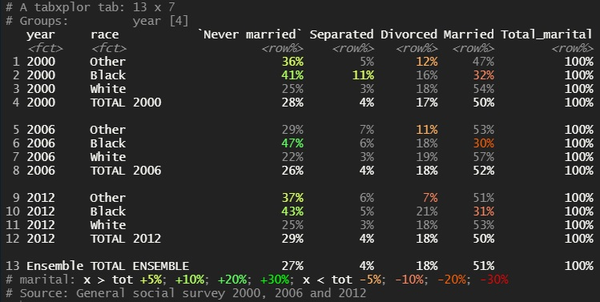

tabxplor makes cross-tables readable at a glance, for data exploration. One line of code builds a table with percentages, weighted counts, confidence intervals and tests — and colors highlight the cells that stand out from the total, only when the difference is statistically solid. You spot the structure of your data immediately, instead of scanning numbers row by row.
What sets it apart:
- Colors encode effect size and significance at once: the stronger the difference, the deeper the color; non-significant cells stay uncolored (or greyed).
-
Cells are rich values: each one carries its count, percentage, confidence interval and reference behind the displayed number — tables are
tibbles you can keep working on withdplyr. - The same colors follow you everywhere: console, html, Excel, markdown/Quarto and plots.
-
Regression tables too:
tab_reg()presents logistic and other models with the same visual language, next to the observed percentages. - Weighted and survey data are supported throughout, and a point-and-click jamovi module is available.

Note for GitHub readers: the tables below lose their colors here — see the package website for the full colored version.
Installation
install.packages("tabxplor")
# Development version:
# install.packages("devtools")
devtools::install_github("BriceNocenti/tabxplor")A quick look
A simple cross-table with row percentages: shades of blue mean the cell is over-represented compared to the total row, shades of red mean it is under-represented, and the legend below the table says by how much.
gss <- gss_cat_data_formatting() # a cleaned-up version of forcats::gss_cat
tab(gss, marital, race, pct = "row", color = "diff")| race | ||||
|---|---|---|---|---|
| marital | White | Black | Other | Total |
| Married | 82% | 9% | 9% | 100% (n=10 117) |
| Separated | 59% | 26% | 15% | 100% (n= 743) |
| Divorced | 79% | 15% | 6% | 100% (n= 3 383) |
| Widowed | 82% | 14% | 4% | 100% (n= 1 807) |
| Never married | 64% | 24% | 12% | 100% (n= 5 416) |
| NA | 76% | 12% | 12% | 100% (n= 17) |
| Total | 76% | 15% | 9% | 100% (n=21 483) |
|
Shades of blue: cells ≥ the Total row +5; +10; +20; +30 points. Shades of yellow to red: cells ≤ the Total row -5; -10; -20; -30 points. |
||||
Several column variables can be crossed at once — handy for series of survey questions, keeping only the level of interest. With color_signif = "grey_non_signif", cells that are not significantly different from the total are greyed out, so every colored (or black) figure is a solid one. Use wt = for weighted or survey data.
tab(gss, relig, c(married, income25k), pct = "row", levels = "first",
color = "diff", color_signif = "grey_non_signif")| married | income25k | |
|---|---|---|
| relig | 01-Married |
01-$25000 or more |
| 1-Protestant | 50% | 32% |
| 2-Catholic | 50% | 35% |
| 3-Other christian | 44% | 35% |
| 4-Jewish | 51% | 43% |
| 5-Buddhist/Hinduist | 51% | 47% |
| 6-Muslim | 53% | 32% |
| 7-Other | 37% | 37% |
| 8-None | 37% | 37% |
| NA | 45% | 15% |
| Total | 47% | 34% |
|
Shades of blue: cells ≥ the Total row +5; +10; +20; +30 points. Shades of yellow to red: cells ≤ the Total row -5; -10; -20; -30 points. Coloured: significantly different from the Total row (Newcombe score interval, 95% confidence), by at least the first colour threshold. Uncoloured: either not significant, or a difference under ±5 points. |
||
The same visual language extends to regression models: tab_reg() detects a binary outcome and fits a logistic regression, coloring odds ratios by strength and greying the non-significant ones.
Logistic regression: married by race, age +1 more
| married: 01-Married | |
|---|---|
| levels | Model_OR |
| Reference population | 1/4.09*** |
| White | 1 |
| Black | 1/2.22*** |
| Other | 1.08 |
| age | 1.03*** |
| 1-Lt $10000 | 1 |
| 2-$10000 to 14999 | 1.15* |
| 3-$15000 to 24999 | 1.28*** |
| 4-$25000 or more | 1.85*** |
| N | 12 990 |
| LR vs null | <0.01% |
| McFadden R2 | 0.049 |
| AIC | 17 129 |
| BIC | 17 181 |
|
Model: logistic regression; odds ratios (vs the reference category). |
|
Export your tables
Any table exports with its colors to Excel, html or markdown, and can be drawn as a plot:
tab(gss, marital, race, pct = "row", color = "diff") |> tab_xl() # Excel
tab(gss, marital, race, pct = "row", color = "diff") |> tab_export("html")Learn more
- Introduction to tabxplor — the place to start (aussi disponible en français).
- Regression tables with tab_reg() (en français).
- Programming with tabxplor — many tables at once, custom workflows, options (en français).
No code needed: the tabxplor modules for the free statistical spreadsheet jamovi offer the same tables (Crosstables and Regressions) in a point-and-click interface.